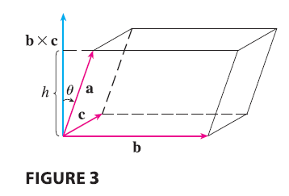

The product \(\mathbf{a} \cdot (\mathbf{b} \times \mathbf{c})\) that occurs in Property 5 is called the scalar triple product of the vectors a, b, and c. Notice from Equation 12 that we can write the scalar triple product as a determinant: \[ \mathbf{a} \cdot (\mathbf{b} \times \mathbf{c}) = \begin{vmatrix} a_1 & a_2 & a_3 \\ b_1 & b_2 & b_3 \\ c_1 & c_2 & c_3 \end{vmatrix} \tag{13} \]

The geometric significance of the scalar triple product can be seen by considering the parallelepiped determined by the vectors a, b, and c. (See Figure 3.) The area of the base parallelogram is \(A = |\mathbf{b} \times \mathbf{c}|\). If \(\theta\) is the angle between a and \(\mathbf{b} \times \mathbf{c}\), then the height \(h\) of the parallelepiped is \(h = |\mathbf{a}||\cos\theta|\). (We must use \(|\cos\theta|\) instead of \(\cos\theta\) in case \(\theta > \pi/2\).) Therefore the volume of the parallelepiped is \[ V = Ah = |\mathbf{b} \times \mathbf{c}||\mathbf{a}||\cos\theta| = |\mathbf{a} \cdot (\mathbf{b} \times \mathbf{c})| \] Thus we have proved the following formula.
The volume of the parallelepiped determined by the vectors a, b, and c is the magnitude of their scalar triple product: \[ V = |\mathbf{a} \cdot (\mathbf{b} \times \mathbf{c})| \tag{14} \]
If we use the formula in (14) and discover that the volume of the parallelepiped determined by a, b, and c is 0, then the vectors must lie in the same plane; that is, they are coplanar.
EXAMPLE 5 Use the scalar triple product to show that the vectors \(\mathbf{a} = \langle 1, 4, -7 \rangle, \mathbf{b} = \langle 2, -1, 4 \rangle,\) and \(\mathbf{c} = \langle 0, -9, 18 \rangle\) are coplanar.